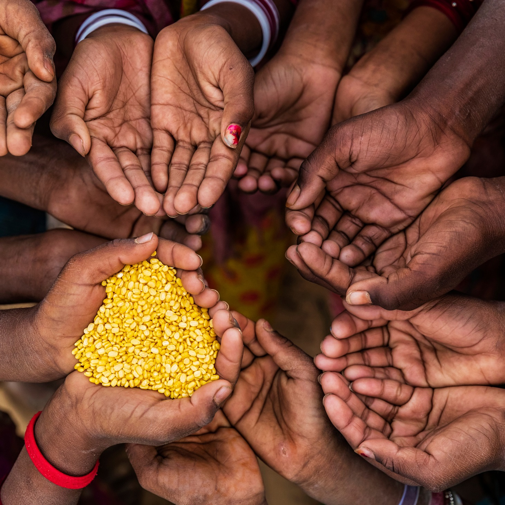

Pense Nisso

Alimente sua consciência e ajude o próximo através da comida! Faça escolhas alimentares conscientes, optando por alimentos saudáveis e sustentáveis. Ao reduzir o desperdício e compartilhar refeições com quem precisa, você estará promovendo uma sociedade mais justa e solidária. Nutra seu corpo e sua comunidade com uma atitude alimentar cheia de compaixão. Junte-se a nós nessa jornada transformadora!
Segurança Alimentar

Garanta um futuro saboroso e sustentável, descubra a importância da segurança alimentar e mergulhe no mundo da agricultura sustentável. Cultivar alimentos de forma responsável, protegendo o meio ambiente e garantindo a disponibilidade de alimentos nutritivos é essencial para o bem-estar de todos. Conheça práticas agrícolas inovadoras que preservam os recursos naturais, promovem a biodiversidade e fortalecem as comunidades rurais. Abrace essa jornada rumo a um planeta mais saudável
Receitas